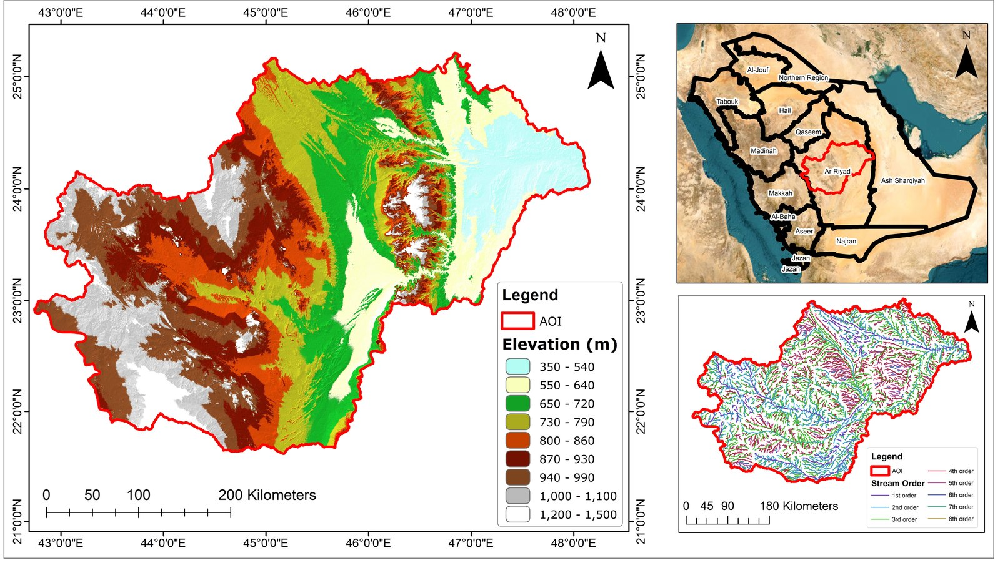

2026
GeoAI Drought Modelling Framework
Forecasts drought severity (SPEI-3) over the Al-Kharj–Riyadh Basin, Saudi Arabia, comparing an interpretable XGBoost baseline against a ConvLSTM spatiotemporal deep learning model. Fuses CHIRPS, ERA5-Land, MODIS and GLDAS/FLDAS onto a common 5 km grid, 2000–2024, evaluated with RMSE, R² and KGE.
View Project